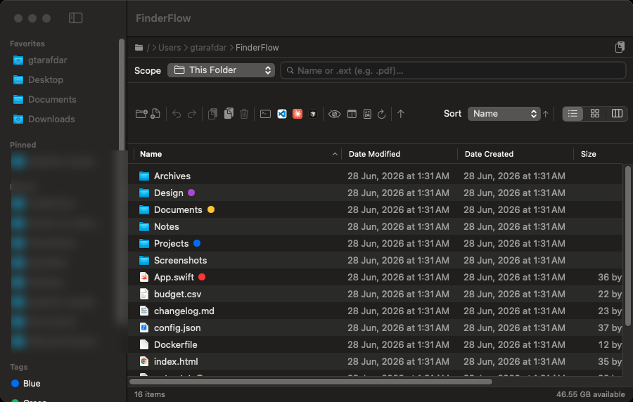
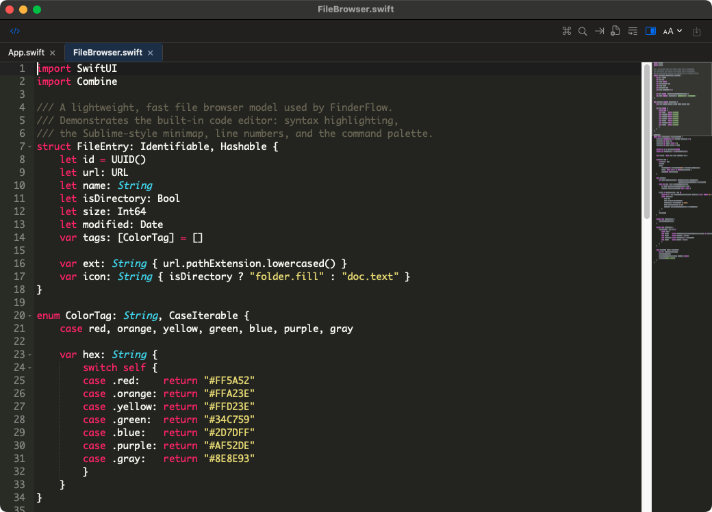

🗂️
Three real views
Column (miller) with a live preview pane, sortable List with date grouping, and a resizable Icon grid.
macOS file manager · runs fully on your Mac
A fast, native file browser with a built-in code editor, a Markdown reader, real Finder color tags, Spotlight search, and one-click IDE launch — the whole stack you usually open four apps for, in one window.

Why switch
The reasons people move from Finder — none of these ship in macOS Finder.
Built-in editor
Open any text or code file straight from the browser into a real, standalone, resizable window — it never blocks your file navigation.

Everything in the box
Column (miller) with a live preview pane, sortable List with date grouping, and a resizable Icon grid.
The 7 standard colors, multiple per file, written in macOS's real format — they show up in Finder too.
This folder, recursive, or your entire Mac. Extension search (.pdf) included.
Quick Look + a preview pane for images, PDFs, code, video, audio, docs.
Every move, rename, paste and trash is reversible — partial-failure-safe.
A bundled extension adds New Folder Here, Copy Path, Open in Terminal & Open in FinderFlow to Finder.
exclusiveRoute folder opens to FinderFlow via LaunchServices. Pin & recent folders, path bar, launch at login.
Trust
It handles your files, so it's built — and reviewed — to deserve that.
Get it running
| macOS | 14.0 Sonoma or later |
|---|---|
| Chip | Apple Silicon or Intel (universal) |
| Download | ≈ 6.8 MB · .dmg |
| Extras | None — fully self-contained |
| Price | Free & open source (MIT) |
On first browse, macOS shows standard “allow access” prompts — normal for any file manager. Just click Allow.

About the maker
WordPress product marketer by trade, stubborn problem-solver by habit, lifelong Harry Potter devotee by heart. By day I'm the Product Marketing Specialist at WPBakery. Before that I helped a single plugin cross 400,000+ active users. When the day-job owl flies home, I tinker on my own little workshop of spells — FinderFlow is one of them.
Install once. Browse, tag, search, edit, and launch your IDE — all in one window.
Universal · macOS 14+ · ad-hoc signed · 6.8 MB